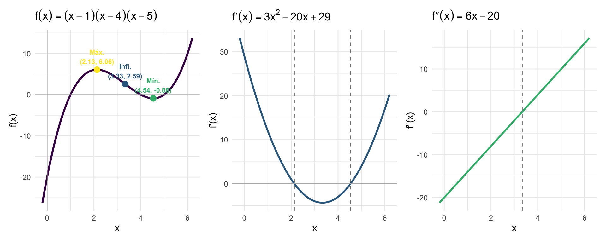

library(ggplot2)
library(patchwork)
f <- function(x) (x-1)*(x-4)*(x-5)
fp <- function(x) 3*x^2 - 20*x + 29
fpp <- function(x) 6*x - 20
x0 <- (10 - sqrt(13)) / 3
x1 <- (10 + sqrt(13)) / 3
xi <- 10/3
x_seq <- seq(-0.2, 6.2, length.out = 500)
df <- data.frame(x = x_seq, y = f(x_seq), yp = fp(x_seq), ypp = fpp(x_seq))
pts <- data.frame(
x = c(x0, xi, x1),
y = c(f(x0), f(xi), f(x1)),
label = c(sprintf("Máx.\n(%.2f, %.2f)", x0, f(x0)),
sprintf("Infl.\n(%.2f, %.2f)", xi, f(xi)),
sprintf("Mín.\n(%.2f, %.2f)", x1, f(x1))),
tipo = c("Máximo", "Inflexão", "Mínimo")
)
base_t <- theme_minimal(base_size = 11)
p1 <- ggplot(df, aes(x, y)) +
geom_line(color = "#440154", linewidth = 1.1) +
geom_hline(yintercept = 0, color = "gray70", linewidth = 0.4) +
geom_vline(xintercept = 0, color = "gray70", linewidth = 0.4) +
geom_point(data = pts, aes(x, y, color = tipo), size = 3, show.legend = FALSE) +
geom_text(data = pts, aes(x, y, label = label, color = tipo),
vjust = -0.4, size = 2.8, fontface = "bold", show.legend = FALSE) +
scale_color_manual(values = c("Máximo" = "#FDE725",
"Inflexão" = "#31688e",
"Mínimo" = "#35b779")) +
labs(title = expression(f(x) == (x-1)*(x-4)*(x-5)),
x = "x", y = "f(x)") + base_t
p2 <- ggplot(df, aes(x, yp)) +
geom_line(color = "#31688e", linewidth = 1) +
geom_hline(yintercept = 0, color = "gray70", linewidth = 0.4) +
geom_vline(xintercept = c(x0, x1), linetype = "dashed", color = "gray50") +
labs(title = expression(f*minute(x) == 3*x^2 - 20*x + 29),
x = "x", y = "f'(x)") + base_t
p3 <- ggplot(df, aes(x, ypp)) +
geom_line(color = "#35b779", linewidth = 1) +
geom_hline(yintercept = 0, color = "gray70", linewidth = 0.4) +
geom_vline(xintercept = xi, linetype = "dashed", color = "gray50") +
labs(title = expression(f*second(x) == 6*x - 20),
x = "x", y = "f''(x)") + base_t
p1 + p2 + p3